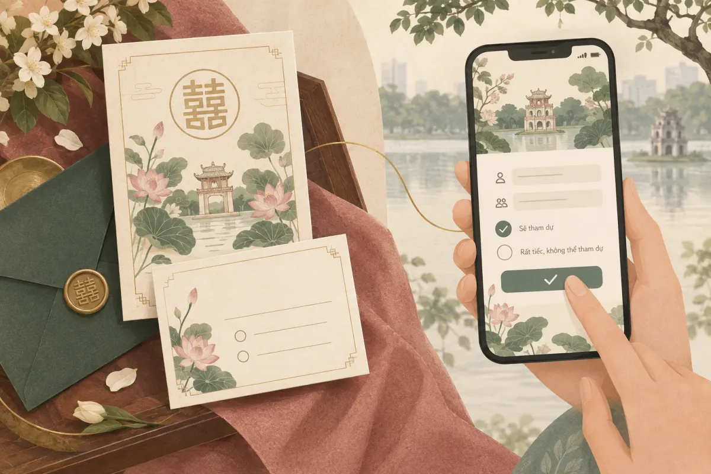
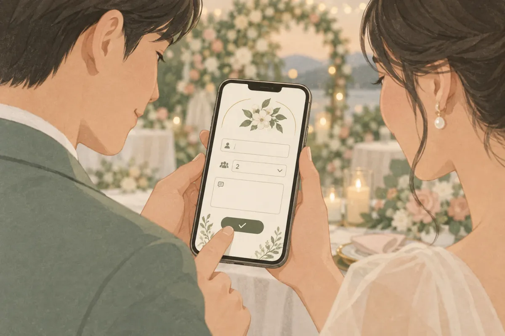
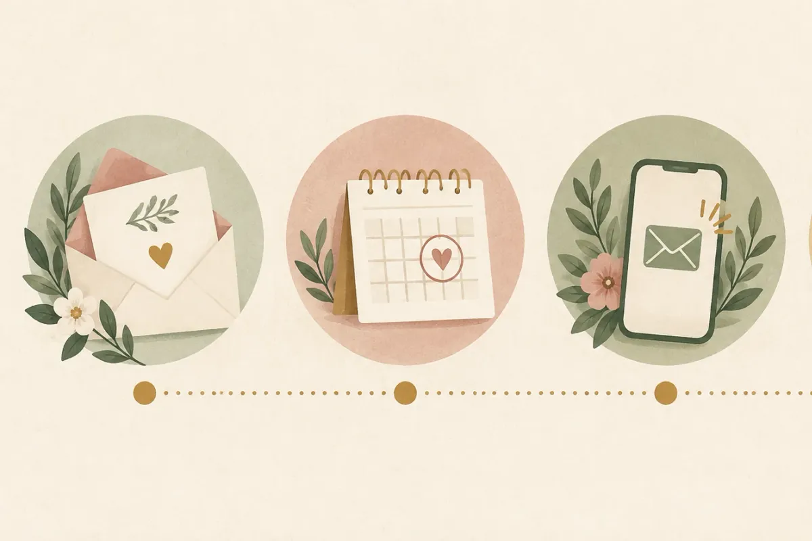

RSVP đám cưới là lời đề nghị in trên thiệp, yêu cầu khách báo lại có dự tiệc hay không — viết tắt của cụm tiếng Pháp "Répondez s'il vous plaît" (xin vui lòng hồi âm). Xác nhận tham dự đám cưới không bắt buộc theo luật, nhưng đây là phép lịch sự tối thiểu giúp cô dâu chú rể đặt bàn đúng số. Có 4 cách thu RSVP phổ biến: gọi điện, nhắn tin, Google Form và form ngay trên thiệp cưới online, với hạn hợp lý là 2–3 tuần trước ngày cưới. Sau đây là cách dùng RSVP để chốt số bàn không thừa.
- RSVP trên thiệp cưới online hoạt động thế nào
- Mẫu thiệp cưới online có form xác nhận tham dự
- Chọn tháng cưới đại lợi trước khi gửi thiệp
RSVP đám cưới là gì?
RSVP đám cưới là lời đề nghị in trên thiệp, yêu cầu khách báo lại có tham dự hay không trước một hạn nhất định, để cô dâu chú rể chốt số khách, số bàn và suất ăn với nhà hàng. Cụm RSVP viết tắt từ tiếng Pháp "Répondez s'il vous plaît", nghĩa đen là "xin vui lòng hồi âm". Theo Wikipedia, cụm này xuất hiện trong thư mời tiếng Anh từ khoảng năm 1900 và nay ít dùng ở chính nước Pháp. Tại Việt Nam, RSVP ngày càng phổ biến trên thiệp cưới online vì khách chỉ cần bấm một nút thay vì gọi điện.
RSVP = "Bạn có đến không? Báo giúp mình trước ngày X." Đơn giản vậy thôi — nhưng thiếu nó, bạn phải đoán số khách khi đặt cọc nhà hàng.
RSVP trên thiệp giấy
Truyền thống phương Tây gửi kèm thiệp mời một thiệp phúc đáp (reply card) và phong bì dán tem sẵn. Khách đánh dấu "Accepts" hoặc "Declines", ghi số người đi kèm rồi gửi lại qua bưu điện. Cách này gần như không có ở Việt Nam vì thiệp cưới Việt không kèm thiệp phúc đáp và chi phí bưu điện không phổ biến.
RSVP trên thiệp cưới online
Thiệp cưới online (thiệp cưới điện tử, e-invitation) có sẵn form RSVP ngay trên trang. Khách mở link, điền tên, chọn số người đi kèm, ghi lời nhắn rồi bấm "Xác nhận tham dự". Kết quả lưu tự động vào Google Sheets của cô dâu chú rể — không cần tổng hợp tay từ hàng trăm tin nhắn Zalo.
RSVP dùng cho sự kiện nào ngoài đám cưới?
RSVP áp dụng cho mọi sự kiện cần đếm người: ăn hỏi, sinh nhật, thôi nôi, kỷ niệm ngày cưới, họp lớp, tất niên. Cấu trúc form giống nhau: tên, số người, có đi không. Bạn có thể xem các thiệp mời sinh nhật, thôi nôi, họp lớp online để hình dung.

RSVP là viết tắt của từ gì và đọc thế nào?
RSVP viết tắt cụm tiếng Pháp "Répondez s'il vous plaît", nghĩa là "xin vui lòng hồi âm". Trên thiệp Việt, dòng RSVP ghi kèm hạn phản hồi: "RSVP — Vui lòng xác nhận tham dự trước ngày 20/10". Cách đọc phổ biến: "a-rét-vê-pê" (theo phiên âm Pháp) hoặc đánh vần bốn chữ cái tiếng Anh "ar-ét-vi-pi". Theo Cambridge Dictionary, RSVP dùng như động từ lẫn danh từ trong tiếng Anh hiện đại.
"Kindly RSVP", "RSVP by", "Regrets only" nghĩa là gì?
Kindly RSVP = "xin vui lòng hồi âm" (lịch sự hơn "Please RSVP"). RSVP by October 20 = "xin xác nhận trước ngày 20 tháng 10". Regrets only = "chỉ báo nếu không đi" — không nhận phản hồi đồng nghĩa khách sẽ đến. Regrets only ít dùng ở Việt Nam vì rủi ro đoán nhầm cao.
Ghi RSVP bằng tiếng Việt hay giữ tiếng Anh?
Ghi cả hai, tiếng Việt trước. Ví dụ: "Vui lòng xác nhận tham dự trước 20/10 (RSVP)". Khách trẻ hiểu RSVP, nhưng cô bác lớn tuổi cần dòng tiếng Việt để biết phải làm gì. Thiệp cưới online giải quyết luôn: nút bấm ghi "Xác nhận tham dự", ai cũng hiểu.
Có bắt buộc phải RSVP khi nhận thiệp cưới không?
Không bắt buộc, nhưng cần. Không RSVP khiến chủ tiệc phải đoán số khách, dễ thừa hoặc thiếu bàn; xác nhận sớm giúp họ đặt cọc đúng, xếp chỗ đúng và giữ được thể diện hai bên.
Với khách mời: trả lời trong hạn, báo đúng số người
Nhận thiệp mà chưa chắc lịch? Vẫn nên trả lời: "Em chưa chắc, nhưng dự kiến đi 2 người. Nếu thay đổi em báo lại trước [ngày]." Một câu ngắn giúp chủ tiệc có con số để tính, hơn hẳn sự im lặng.
Với chủ tiệc: RSVP là công cụ đếm, không phải "ép" khách
Đặt RSVP trên thiệp không phải điểm danh. Đó là cách hỏi "bạn có đến không?" lịch sự hơn gọi từng người. Ghi rõ hạn, ghi rõ kênh trả lời — khách sẽ dễ hành động hơn khi biết cần làm gì.
Nhìn từ phía mẹ chồng, họ hàng lớn tuổi
Nhiều gia đình xem RSVP là "hỏi thăm" chứ không phải "điểm danh". Bố mẹ chú rể gọi điện mời họ hàng, hỏi thăm sức khoẻ, tiện thể biết ai đi ai không — bản chất là RSVP bằng giọng nói, không cần gọi tên RSVP. Cách này phù hợp với nhóm khách trên 50 tuổi.
Vì sao khách Việt ít xác nhận tham dự và cô dâu chú rể mất gì?
Khách Việt ít xác nhận vì thói quen "đến thì đến", ngại cam kết, và thiệp giấy không có chỗ trả lời tiện. Hệ quả: chủ tiệc đặt dư bàn, mỗi bàn thừa mất trắng tiền cọc.
3 nguyên nhân chính
- Thói quen văn hoá "đến thì đến". Ở nhiều vùng, nhận thiệp đồng nghĩa sẽ đi; không đi thì khỏi gửi thiệp. Xác nhận lại bị coi là thừa.
- Ngại cam kết sớm. Khách sợ hứa "có" rồi đột xuất không đi, mất mặt hơn là im lặng ngay từ đầu.
- Thiệp giấy không có kênh phản hồi. Thiệp in xong, phát tay, không có số điện thoại hay nút bấm nào để trả lời. Khách muốn xác nhận cũng chẳng biết báo ai.
3 hệ quả cho cô dâu chú rể
- Thừa bàn, mất tiền cọc. Một bài trên VnExpress (06/2021) kể trường hợp đám cưới mời 300 khách — tức 30 bàn — nhưng dư đến 5 bàn. Với giá bàn tiệc cưới dao động tuỳ nhà hàng, 5 bàn trống có thể tương đương vài triệu đến hơn chục triệu đồng.
- Thiếu bàn, phát sinh gấp. Ngược lại, nếu nhiều khách không RSVP nhưng bất ngờ đến, nhà hàng phải kê thêm bàn phút chót — nếu còn chỗ.
- Không xếp được sơ đồ chỗ ngồi. Ai ngồi cạnh ai cần biết trước ai đi, bao nhiêu người. Không có RSVP, sơ đồ bàn chỉ là phỏng đoán.
"Rất ít — hầu như không — ai xác nhận sẽ chắc chắn tham dự."— Tác giả bài Ý kiến, VnExpress 04/06/2021
Bài Ý kiến khác trên VnExpress (10/2022) nêu thêm tục "chủ tiệc gọi xin lời trước, không đi thì khỏi gửi thiệp" ở Sài Gòn — bản chất là một dạng RSVP bằng miệng. Nỗi đau không mới, chỉ là chưa ai đặt tên. Vậy cách nào thu RSVP hiệu quả nhất?
4 cách thu RSVP cho đám cưới: gọi điện, tin nhắn, form, thiệp online
Có 4 cách thu RSVP: gọi điện (chắc nhất, tốn công), nhắn Zalo/SMS (nhanh, khó tổng hợp), Google Form riêng (đếm được, thêm một link), và form ngay trên thiệp cưới online (khách bấm một lần, kết quả tự vào bảng).
Cách 1: Gọi điện
Gọi trực tiếp cho từng khách, hỏi thăm và xác nhận luôn. Độ chắc chắn cao nhất vì nghe giọng nói biết ngay "có" hay "không". Phù hợp với bố mẹ, ông bà, họ hàng lớn tuổi, sếp. Nhược điểm: mất 2–3 phút mỗi cuộc, mời 300 khách cần hàng chục giờ gọi.
Cách 2: Nhắn Zalo hoặc SMS
Gửi tin nhắn kèm ảnh thiệp hoặc link, hỏi "Anh/chị có dự được không ạ?". Nhanh, tiện, nhưng câu trả lời nằm rải rác trong hàng trăm đoạn chat — tổng hợp bằng tay dễ sót.
Cách 3: Google Form riêng
Tạo form trên Google Forms: tên, số điện thoại, số người đi kèm, lời nhắn. Chia sẻ link form qua Zalo. Kết quả tự vào Google Sheets. Nhược điểm: khách phải mở thêm một link khác ngoài thiệp, và giao diện form không đẹp bằng thiệp.
Cách 4: Form RSVP ngay trên thiệp cưới online
Thiệp cưới online có form xác nhận tham dự tích hợp sẵn. Khách mở thiệp, xem ảnh, đọc thông tin lễ cưới, cuộn xuống bấm "Xác nhận tham dự" — không cần mở link khác. Kết quả lưu tự động vào Google Sheets gồm: họ tên, số điện thoại, số khách đi kèm, lời nhắn, ngày gửi. Bạn có thể xem demo một mẫu thiệp cưới có RSVP để hình dung luồng hoạt động.

| Tiêu chí | Gọi điện | Zalo / SMS | Google Form | Form trên thiệp online |
|---|---|---|---|---|
| Độ chắc chắn | Cao | Trung bình | Trung bình | Trung bình – Cao |
| Công sức chủ tiệc | Cao | Trung bình | Thấp | Thấp |
| Tự tổng hợp | Không | Không | Có (Sheets) | Có (Sheets) |
| Phù hợp người lớn tuổi | Tốt nhất | Khá | Khó | Khá |
| Chi phí thêm | Cước gọi | 0đ | 0đ | Đã gồm trong gói thiệp |
Cách hiệu quả nhất: kết hợp cách 1 và cách 4 — gửi thiệp online cho đại trà (bạn bè, đồng nghiệp), gọi điện cho 10–20% khách thân (bố mẹ, họ hàng, sếp). Ghi kết quả cuộc gọi vào cùng bảng Sheets để tổng hợp một chỗ.
Xem mẫu thiệp cưới có sẵn form xác nhận tham dự
Khách bấm một lần, kết quả về bảng Google Sheets của bạn. Hơn 50 mẫu thiệp cưới, giao trong 24h.
Cách viết câu RSVP trên thiệp cưới: 3 yếu tố bắt buộc
Để viết câu RSVP, ghi đủ 3 yếu tố: hạn phản hồi (ngày cụ thể), kênh phản hồi (số điện thoại / Zalo / nút bấm) và số người đi kèm. Thiếu một trong ba, khách không biết phải làm gì hoặc làm trước khi nào.
5 mẫu câu RSVP tiếng Việt cho thiệp
- Trang trọng: "Trân trọng kính mời quý khách xác nhận tham dự trước ngày 20/10/2026. Liên hệ: 09xx xxx xxx (cô dâu) hoặc bấm nút Xác nhận bên dưới."
- Thân mật: "Bạn đến nhé! Báo giúp mình trước 20/10 qua Zalo 09xx hoặc bấm nút bên dưới. Cho mình biết đi mấy người luôn nha."
- Song ngữ: "Vui lòng xác nhận tham dự trước 20/10. / Kindly RSVP by October 20. Zalo 09xx or tap the button below."
- Thiệp online: "Xác nhận tham dự trước 20/10 bằng cách bấm nút bên dưới. Bạn có thể ghi số người đi kèm và lời nhắn."
- Thiệp báo hỷ (không tiệc): "Chúng mình tổ chức lễ gia tiên tại gia đình. Nếu bạn muốn gửi lời chúc, bấm nút bên dưới — mình trân trọng mọi lời nhắn."
3 mẫu tin nhắn Zalo nhắc khách chưa phản hồi
- "Chào anh/chị, em gửi thiệp cưới tuần trước ạ. Anh/chị tiện xác nhận giúp em trước [ngày] để em chốt bàn với nhà hàng nhé. Cảm ơn anh/chị!"
- "Hi [tên], mình gửi thiệp rồi mà chưa thấy bạn trả lời. Bạn đi được không? Cho mình biết trước [ngày] nhé, cần chốt số bàn."
- "Chào cô/chú, cháu nhắn xác nhận lại ạ — tiệc cưới cháu ngày [ngày], cô/chú có dự được không ạ? Cháu cảm ơn cô/chú!"
2 mẫu câu khách trả lời RSVP
- Nhận lời: "Cảm ơn bạn, mình sẽ đến. Đi 2 người nhé!"
- Từ chối khéo: "Mình tiếc quá, hôm đó mình có việc không sắp xếp được. Chúc hai bạn hạnh phúc!"
Gửi thiệp online kèm tin nhắn cá nhân qua Zalo: "Anh/chị mở thiệp xem, bấm xác nhận giúp em nhé!" — tỷ lệ phản hồi cao hơn nhiều so với chỉ gửi link trơn.
Cách chốt số bàn từ kết quả RSVP: 4 bước không thừa bàn
Để chốt số bàn, làm 4 bước: gửi thiệp 4–6 tuần trước cưới, đặt hạn RSVP 2–3 tuần trước, nhắc khách chưa trả lời 1 tuần trước, rồi báo nhà hàng số bàn chính + 1–2 bàn dự phòng.

Bước 1: Gửi thiệp 4–6 tuần trước cưới
Chia khách thành 2–3 nhóm: nhóm A (gia đình, bạn thân — gửi đầu tiên), nhóm B (đồng nghiệp, bạn phổ thông), nhóm C (khách dự phòng — gửi sau khi nhóm A/B từ chối, bù chỗ trống). Trước khi gửi, hãy chốt ngày cưới đẹp theo tuổi để mốc thời gian rõ ràng.
Bước 2: Đặt hạn RSVP 2–3 tuần trước cưới
Ghi hạn cụ thể trên thiệp: "Xác nhận trước ngày 20/10" thay vì "xác nhận trước đám cưới". Hạn 2–3 tuần trước ngày cưới là thông lệ phổ biến — đủ thời gian để nhắc lại và chốt với nhà hàng.
Bước 3: Nhắc khách chưa trả lời — 1 tuần trước hạn
Dùng mẫu tin nhắn ở mục trên. Với nhóm chưa trả lời sau tin nhắn nhắc, gọi điện trực tiếp. Ưu tiên gọi khách mời đông người (gia đình 4–5 người) vì sai 1 hộ gia đình có thể lệch cả nửa bàn.
Bước 4: Quy đổi số khách ra số bàn, báo nhà hàng
Công thức:
Số bàn = (Tổng khách xác nhận "có" + số người đi kèm) ÷ số ghế mỗi bàn (tuỳ nhà hàng, phổ biến 10 ghế/bàn) + 1–2 bàn dự phòng.
Ví dụ: 200 khách xác nhận "có" (kể cả người đi kèm) ÷ 10 ghế/bàn = 20 bàn + 2 bàn dự phòng = 22 bàn báo nhà hàng. Thời điểm chốt cuối cùng với nhà hàng tuỳ hợp đồng, phổ biến 3–7 ngày trước tiệc.
Nếu dùng thiệp online có RSVP lưu Google Sheets, bạn lọc cột "số khách" rồi dùng hàm SUM để cộng tổng — không cần đếm tay. Kết quả RSVP còn giúp xếp sơ đồ bàn: bàn gia đình nhà trai, bàn bạn thân cô dâu, bàn đồng nghiệp — từng nhóm biết trước ai ngồi cùng ai.
Khi nào vẫn nên gọi điện thay vì chỉ chờ RSVP online?
Gọi điện khi khách là bố mẹ, ông bà, họ hàng lớn tuổi, sếp hoặc người ít dùng điện thoại thông minh. Với 3 nhóm này, RSVP online chỉ là kênh phụ; cuộc gọi vừa xác nhận vừa thể hiện sự trân trọng.
3 nhóm khách nên gọi trực tiếp
- Bố mẹ, ông bà hai bên — gọi điện mời là phép tắc, thiệp chỉ là "giấy mời" bổ sung.
- Sếp, đối tác công việc — một cuộc gọi ngắn thể hiện sự coi trọng hơn một tin nhắn Zalo.
- Họ hàng trên 60 tuổi — nhiều cô bác không dùng Zalo hoặc không quen bấm form.
Kết hợp: gửi thiệp online đại trà + gọi 10–20% khách thân
Cách phổ biến nhất: gửi link thiệp online cho 80–90% khách qua Zalo (bạn bè, đồng nghiệp) và gọi điện cho 10–20% còn lại (gia đình, sếp). Kết quả cuộc gọi ghi tay vào cùng bảng Google Sheets, bạn có một danh sách duy nhất để chốt bàn. Xem thêm 12 tính năng của thiệp cưới online Templexa để hiểu form RSVP nằm ở đâu trong luồng thiệp.
RSVP trên thiệp cưới online Templexa hoạt động thế nào?
Form RSVP có ở mọi gói: Basic 150.000đ và Premium 199.000đ. Khách điền họ tên, số điện thoại, chọn 1–5 người đi kèm, ghi lời nhắn, tuỳ chọn thêm "đi chung xe" hoặc "ăn chay". Bấm gửi, kết quả lưu tự động vào Google Sheets do cô dâu chú rể sở hữu — không qua server Templexa. Gói Premium có link riêng từng khách (?id=ten-khach), giúp biết chính xác ai đã trả lời, ai chưa. Giao trong 24h, liên hệ Zalo 0334 884 895.
Không trừ thẳng theo số khách xác nhận "có" để đặt bàn. Luôn cộng thêm 1–2 bàn dự phòng vì một số khách xác nhận rồi vẫn không đến, và một số khách không xác nhận nhưng vẫn đến.
Câu hỏi thường gặp về RSVP đám cưới
RSVP là viết tắt của từ gì?
Không RSVP có sao không?
Hạn RSVP nên đặt trước ngày cưới bao lâu?
Khách đã xác nhận "có" nhưng không đến thì tính thế nào?
Thiệp cưới online có RSVP không, kết quả lưu ở đâu?
Người lớn tuổi không biết bấm form thì xác nhận bằng cách nào?
"RSVP" khác "Regrets only" thế nào?
Có nên hỏi số người đi kèm trong RSVP không?
Lời cuối
RSVP đám cưới không phải khái niệm xa lạ — bản chất là câu hỏi "bạn có đến không?" được gửi đi có hệ thống. Ghi rõ hạn trên thiệp, kết hợp gọi điện cho nhóm thân và form online cho nhóm đại trà, rồi cộng tổng một bảng duy nhất. Đó là cách chốt số bàn không thừa mà không phải gọi 300 cuộc.
- Bảng giá thiệp cưới online — gói Basic 150.000đ đã có RSVP
- Cẩm nang thiệp cưới & lời mời
- Cách gửi thiệp cưới online cho khách
Templexa
Đội ngũ làm thiệp cưới online tại Templexa — mỗi tuần trò chuyện với hàng chục cặp đôi sắp cưới, và viết lại những gì đã học được trong Cẩm nang cưới hỏi.